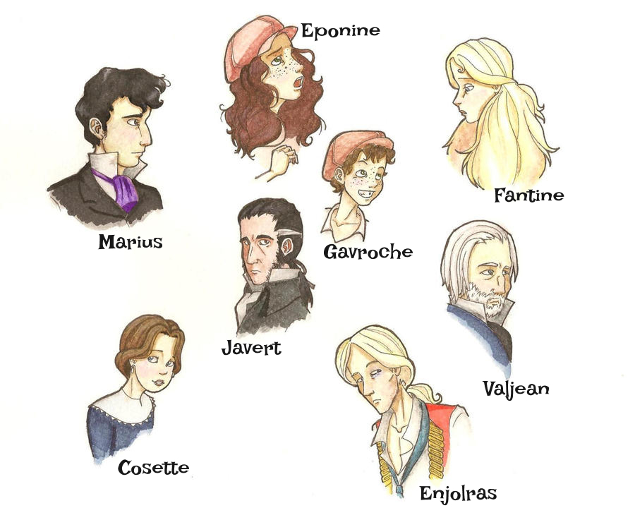

Graphdatenvisualisierung im Web
1. Intro (Warum Soziale Netzwerke schwer zu zeichnen sind)
Soziale Netzwerke gehören zu den anschaulichsten Beispielen für Graphdaten. Menschen, Webseiten, Accounts oder Gruppen lassen sich als Knoten darstellen, ihre Beziehungen als Kanten. Genau diese Einfachheit macht Graphen so attraktiv: Viele wichtige Fragen lassen sich damit direkt formulieren, etwa wer mit wem verbunden ist, welche Gruppen entstehen oder welche Knoten besonders zentral sind.
Ein solches Netzwerk besteht aus tausenden bis Millionen von Verbindungen. Je mehr Knoten und Kanten hinzukommen, desto schneller wird die Struktur unlesbar. Das Problem ist nicht nur die reine Datenmenge, sondern die Tatsache, dass Daten keine räumliche Ordnung besitzen, sie enthalten nur Beziehungen.
Graphdatenvisualisierung versucht deshalb, Beziehungen so im Raum anzuordnen, dass Muster sichtbar werden. Ziel ist nicht nur, alle Daten darzustellen, sondern sie lesbar zu machen. Dazu werden unterschiedliche Layouts, Filter, Interaktionen und Rendering-Techniken verwendet.
2. Was ist Graphdatenvisualisierung?
Ein Graph besteht aus zwei Grundelementen:
- Knoten (z. B. Personen, Seiten, Accounts)
- Kanten (Beziehungen zwischen ihnen, z. B. Freundschaften, Likes, Follows)
Ziel der Graphdatenvisualisierung ist es, diese Struktur räumlich sinnvoll anzuordnen, sodass Muster sichtbar werden. Im Gegensatz zu Karten, Gebäuden oder anderen geografischen Daten gibt es für ein Netzwerk keine natürliche räumliche Ordnung. Die Positionen der Knoten müssen erst durch eine Visualisierung festgelegt werden.
Die wichtigsten Fragen in der Visualisierung sind:
- Welche Knoten sind besonders zentral?
- Welche Gruppen oder Communities entstehen?
- Welche Knoten verbinden verschiedene Gruppen miteinander?
- Wie verändert sich die Struktur bei wachsender Netzgröße?
Je nach Größe und Ziel der Visualisierung werden unterschiedliche Methoden verwendet:
Knoten und Kanten können als Punkte und Linien dargestellt werden.
Cluster können durch Farben oder Umrisse markiert werden.
Hubs können durch größere Knoten hervorgehoben werden.
Gerichtete Kanten können als Pfeile codiert werden.
3. Herausforderung: Wann wird ein Graph unlesbar?
Mit wachsender Größe entstehen vier zentrale Probleme:
1. Kanten überlagern sich: Bei vielen Kanten entsteht ein dichtes Netz aus Linien, das kaum noch einzelne Verbindungen unterscheidbar macht. Dieses Phänomen wird als Hairball-Effekt bezeichnet.
Abbildung: Hairball-Effekt
2. Cluster verschwinden: In kleinen Netzwerken sind Gruppen oft noch gut sichtbar. In größeren Netzwerken überlagern sich Clusters, und die Struktur wird schwerer lesbar.
3. Orientierung geht verloren: Bei vielen Knoten ohne natürliche räumliche Ordnung verlieren Nutzer schnell die Orientierung. Es ist nicht klar, wo sich wichtige Akteure befinden, welche Gruppen existieren und welche Knoten besonders verbunden sind.
4. Interaktion bricht zusammen: Bei kleinen Graphen lassen sich einzelne Knoten noch direkt untersuchen, etwa durch Hover, Labels oder Drag. Bei sehr großen Graphen werden Interaktionen wie Zoom, Hover oder Nachbarschaft-Ansicht technisch anspruchsvoll oder brechen an Performance-Grenzen.
Ab einem gewissen Punkt reicht eine einfache Darstellung daher nicht mehr aus. Dann braucht man effizientere Rendering-Techniken (Canvas, WebGL), Filter, Aggregation oder andere Formen der Reduktion.
Im folgenden werden drei unterschiedliche Ansätze aufgezeigt, wie sich Graphdatenvisualisierung im Web mit wachsender Netzgröße verändert. An drei unterschiedlich großen Social Graphen wird gezeigt, wann eine Visualisierung noch gut lesbar ist , wann sie an Grenzen stößt und welche Methoden jeweils sinnvoll sind .
4a. Kleiner Datensatz
Les Misérables
Der Datensatz basiert auf den Beziehungen aller Figuren aus dem Roman Les Misérables. Er umfasst insgesamt 77 Knoten, wobei jeder Knoten eine einzelne Figur aus der Geschichte repräsentiert. Untenstehend sind die Hauptcharaktere dargestellt:
Abbildung: Hauptcharaktere aus dem Roman “Les Misérables”
Die 77 Figuren sind durch 254 Kanten miteinander verbunden, die jeweils eine gemeinsame Szene oder eine direkte Interaktion zwischen zwei Charakteren darstellen. Die Verbindungen sind ungerichtet, das heißt, sie besitzen keine feste Richtung, sondern beschreiben lediglich die Existenz einer Beziehung zwischen zwei Figuren.
Durch diese Struktur entsteht ein klassisches Netzwerk aus Entitäten und Beziehungen, das sich besonders gut für die Visualisierung von Graphalgorithmen eignet. Der Datensatz ist bewusst klein gehalten, sodass sich jeder einzelne Schritt eines Layout-Verfahrens gut nachvollziehen lässt. Dadurch kann beobachtet werden, wie aus einer reinen Liste von Knoten und Kanten schrittweise eine räumliche Struktur entsteht und sich Muster, Cluster und zentrale Figuren im Verlauf der Berechnung herausbilden.
Die Rohdaten
Noch bevor ein Algorithmus arbeitet, besteht ein Graph lediglich aus einer Liste von Knoten und Kanten. Zu diesem Zeitpunkt gibt es keine räumliche Ordnung und keine visuelle Struktur , sondern ausschließlich die Information darüber, welche Elemente miteinander verbunden sind.
Ein Graph beschreibt somit zunächst nur Beziehungen zwischen Objekten, jedoch nicht deren Position im Raum. Die räumliche Anordnung entsteht erst durch einen späteren Layout-Algorithmus.
Das bedeutet konkret:
- es existieren keine Koordinaten
- es gibt keine geometrische Struktur
- die Darstellung besteht ausschließlich aus Verbindungen zwischen Knoten
Eine Liste aller Verbindungen aus dem Roman Les Misérables ist hier dargestellt:
Abbildung: Übersicht der Rohdaten als Kantenliste (alle Verbindungen zwischen Knoten).
Diese Liste dient als Ausgangspunkt, um die reine Datenstruktur vor jeder räumlichen Anordnung sichtbar zu machen.
Schritt 2 - Was passiert damit?
Die gleichen Knoten werden nun zufällig im Raum verteilt. Obwohl alle Informationen über die Verbindungen vollständig vorhanden sind, entsteht dabei keine sinnvolle räumliche Struktur.
Jeder Knoten erhält lediglich eine beliebige Position innerhalb der Zeichenfläche, unabhängig davon, ob er stark oder schwach mit anderen Knoten verbunden ist. Dadurch wird die eigentliche Informationsstruktur des Graphen nicht sichtbar gemacht, sondern durch die zufällige Platzierung überdeckt.
In dieser Darstellung findest du auch unsere Hauptfiguren wieder, klicke auf den Button, um sie sichtbar zu machen.
Abbildung: Zufällige Anordnung der Knoten zur ersten visuellen Orientierung.
Hauptfiguren einblenden und Namen per Hover erkundenInteraktionsdesign
Über den Button können die Hauptfiguren ein- und ausgeblendet werden. Beim Hovern erscheint ein Tooltip mit dem Namen der Figur, sodass die zufällige Verteilung direkt zu erkennen ist.
Warum zufällige Koordinaten keine Information enthalten Konzept
Der Graph definiert ausschließlich Beziehungen. Er beschreibt nicht, an welcher Position sich ein Knoten befinden soll. Die Koordinaten entstehen erst durch einen Layout-Algorithmus. Zusammenhänge, Cluster oder zentrale Knoten lassen sich dadurch kaum erkennen, da räumliche Nähe hier nicht mit inhaltlicher Nähe übereinstimmt.
- keine Cluster erkennbar
- keine Hierarchie sichtbar
- keine Orientierung im Raum
- Positionen sind rein zufällig und bedeutungslos
Damit wird deutlich, dass ein Graph ohne geeigneten Layout-Algorithmus zwar vollständig definiert ist, aber visuell kaum interpretierbar bleibt.
Schritt 3 – Die Idee eines Force-Directed Layouts
Wie kann aus einer ungeordneten Punktmenge eine lesbare Struktur entstehen?
Die Grundidee besteht darin, den Graphen nicht mehr als reine Sammlung von Punkten und Verbindungen zu betrachten, sondern als ein dynamisches System, das sich wie ein physikalisches Modell verhält. Die einzelnen Knoten besitzen dabei keine festen Positionen, sondern reagieren aufeinander, sobald Kräfte zwischen ihnen wirken. Im Zentrum stehen zwei gegensätzliche Effekte, die gleichzeitig auftreten.
Einerseits ziehen sich Knoten, die durch eine Kante verbunden sind, gegenseitig an. Diese „Anziehung“ sorgt dafür, dass verwandte oder direkt verbundene Elemente näher zusammenrücken.
Andererseits stoßen sich alle Knoten gegenseitig ab, unabhängig davon, ob sie verbunden sind oder nicht. Diese „Abstoßung“ verhindert, dass alle Punkte in einem einzigen Cluster kollabieren.
Durch das Zusammenspiel dieser beiden Kräfte entsteht eine kontinuierliche Bewegung im System. Die Knoten verschieben sich Schritt für Schritt, bis sich ein Zustand einstellt, in dem sich die Kräfte weitgehend ausgleichen. In diesem Gleichgewicht gibt es keine dominante Bewegung mehr, und die Struktur wirkt stabil und lesbar. Das Ergebnis ist keine vorgegebene Anordnung, sondern eine emergente Struktur, die sich aus den zugrunde liegenden Beziehungen selbst entwickelt.
In der folgenden Animation ist das Verhalten der Kräfte sichtbar. Versuche die Knoten näher aneinander zu bringen und erkenne was passiert.Abbildung: Animierte Darstellung der physischen Kräfte.
Knoten per Drag verschieben und Kräfte direkt beobachtenInteraktionsdesign
Die Knoten lassen sich greifen und verschieben. Das Netzwerk reagiert sofort auf Anziehungs- und Abstoßungskräfte, sodass die physikalischen Kräfte des Force-Directed Layouts unmittelbar erfahrbar sind.
Die Kräfte hinter dem Layout Algorithmus
Das Fruchterman-Reingold-Modell betrachtet den Graphen als physikalisches System, in dem sich Knoten gegenseitig beeinflussen.
Jeder Knoten besitzt eine Position xi ∈ ℝ². Die Simulation passt diese Positionen iterativ an, bis ein stabiles Gleichgewicht entsteht.
1. Attraction (Anziehung entlang der Kanten)
Verbundene Knoten wirken wie durch Federn gekoppelt.
Fa(i,j) = k · (‖xi - xj‖ - l) · (xj - xi) / ‖xj - xi‖
- l = optimale Kantenlänge
- Knoten werden zusammengezogen, wenn sie zu weit auseinander liegen
- und abgestoßen, wenn sie zu nah sind
Ziel: gleichmäßige Kantenlängen
2. Repulsion (Abstoßung aller Knoten)
Alle Knoten stoßen sich gegenseitig ab, um Überlagerungen zu vermeiden.
Fr(i,j) = k² / ‖xi - xj‖² · (xi - xj) / ‖xi - xj‖
- starke Abstoßung bei kleinen Distanzen
- schwächer werdend mit wachsendem Abstand
- wirkt auf alle Knotenpaare
Ziel: gleichmäßige Verteilung im Raum
3. Gleichgewichtszustand
Die endgültige Position entsteht, wenn sich alle Kräfte ausgleichen:
∑Fa + ∑Fr ≈ 0
- keine dominante Bewegung mehr
- das System ist stabil
- ein visuell lesbares Layout ist entstanden
Das System minimiert implizit eine Energiefunktion:
- Kanten wollen „kurz“ sein (Attraktion)
- Knoten wollen „weit weg“ sein (Repulsion)
Das Ergebnis ist ein kompromissoptimiertes Layout, das Struktur sichtbar macht.
Schritt 4 – Implementierung von D3
D3 (Data-Driven Documents) ist eine JavaScript-Bibliothek zur Visualisierung von Daten im Web. Sie dient dazu, Daten direkt mit grafischen Elementen im Browser zu verbinden und diese dynamisch darzustellen.
Im Kern bedeutet das, dass nicht statische Grafiken erstellt werden, sondern eine direkte Kopplung zwischen Daten und DOM-Elementen (z. B. SVG oder HTML) entsteht. Wenn sich die Daten verändern, aktualisiert sich automatisch auch die visuelle Darstellung.
Die zentrale Idee lässt sich so zusammenfassen:
- Daten steuern die Darstellung vollständig
- Elemente werden aus Daten heraus erzeugt, nicht manuell gezeichnet
- Änderungen an Daten führen sofort zu visuellen Updates
Wie D3 einen Graphen intern speichert Implementierung
Ein Graph wird typischerweise als JSON gespeichert.
{
"nodes": [
{ "id": "A" },
{ "id": "B" }
],
"links": [
{ "source": "A", "target": "B" }
]
}Dabei gilt:
- nodes enthält alle Elemente des Graphen
- links beschreibt die Beziehungen zwischen diesen Elementen
- source und target definieren jeweils eine Verbindung zwischen zwei Knoten
Während der Simulation ersetzt D3 diese abstrakten Verweise intern durch konkrete Objekte mit zusätzlichen Eigenschaften wie x, y, vx und vy. Dadurch kann der Graph dynamisch berechnet und animiert werden.
Besonders im Bereich von Graphen ist D3 sehr leistungsfähig, da es:
- Knoten und Kanten direkt aus JSON-Strukturen erzeugt
- physikalische Simulationen zur Layout-Berechnung unterstützt
- Positionen kontinuierlich aktualisiert (über sogenannte „ticks“)
Dadurch eignet sich D3 besonders gut für interaktive Netzwerkvisualisierungen im Browser, bei denen sich Strukturen dynamisch entwickeln und erkunden lassen.
Abbildung: Klassische Force-Directed Visualisierung des gesamten Netzwerks mit physikalischer Simulation.
Hauptfiguren umschalten und Namen im Gesamtnetzwerk prüfenInteraktionsdesign
Die vollständige Netzwerkstruktur wird als Force-Simulation dargestellt. Über den Toggle lassen sich die Hauptfiguren hervorheben, und per Hover können einzelne Knoten identifiziert werden.
Welche Kräfte D3 berechnet Implementierung
const simulation = d3.forceSimulation(nodes)
.force("link", ...)
.force("charge", ...)
.force("center", ...);forceLink
Verbundene Knoten werden durch eine virtuelle Feder miteinander verbunden. Die Kraft versucht, eine gleichmäßige Distanz zwischen benachbarten Knoten einzuhalten und bildet so die Grundstruktur des Graphen.forceManyBody
Alle Knoten stoßen sich gegenseitig ab. Dadurch werden Überlagerungen vermieden und der verfügbare Raum gleichmäßig genutzt.forceCenter
Die gesamte Simulation wird zur Mitte der Zeichenfläche gezogen. Dadurch bleibt der Graph im sichtbaren Bereich und driftet nicht aus dem Fenster.Schritt 5 – Das Ergebnis
SVG (Scalable Vector Graphics) ist ein vektorbasiertes Grafikformat im Browser, das grafische Elemente wie Kreise, Linien oder Pfade als einzelne, adressierbare Objekte darstellt. Dadurch lassen sich Visualisierungen flexibel aufbauen und dynamisch verändern, ohne sie neu zu rendern.
Nach mehreren Iterationen der Force-Simulation stabilisiert sich die Struktur des Graphen. Die Knoten bewegen sich so lange, bis sich die Kräfte zwischen Anziehung und Abstoßung weitgehend ausgleichen.
In diesem Zustand wird die Struktur des Datensatzes sichtbar. Aus einer reinen Liste von Beziehungen entsteht ein räumliches Muster mit klar erkennbarer Ordnung.
Typische Strukturen treten hervor:
- dicht verbundene Cluster
- zentrale Knoten mit vielen Verbindungen
- klar abgegrenzte Gruppen
- erkennbare Nachbarschaften im Netzwerk
Warum SVG hier die richtige Wahl ist Architektur
SVG eignet sich besonders gut für kleine Graphen, weil jedes Element (Knoten und Kante) direkt im DOM existiert und dadurch einzeln angesprochen werden kann. Das ermöglicht einfache Interaktionen wie Hover, Drag oder Animationen ohne zusätzliche Rendering-Schichten. Da der Datensatz nur wenige Elemente umfasst, reicht die Performance des Browsers problemlos aus und bleibt flüssig und interaktiv.
Die Farben zeigen, welche Knoten im Les-Misérables-Datensatz derselben Community bzw. sozialen Gruppe zugeordnet sind (also stärker miteinander verbunden sind als mit anderen Gruppen).
Abbildung: Interaktive Netzwerkanalyse mit Gruppenkolorierung, Hover-Highlighting und Detailanzeige.
Communities farblich lesen und Nachbarschaften per Hover hervorhebenInteraktionsdesign
Farben markieren soziale Gruppen innerhalb des Netzwerks. Beim Hover über einen Knoten werden seine direkten Verbindungen hervorgehoben und nicht relevante Elemente abgeschwächt, wodurch lokale Nachbarschaften und zentrale Figuren leichter erkennbar werden.
Schritt 6 – Die Grenze
Das gleiche Verfahren funktioniert nicht nur für kleine Netzwerke, sondern lässt sich grundsätzlich auf größere Datenmengen anwenden. Genau hier zeigt sich jedoch eine entscheidende Schwäche.
Mit wachsender Größe verändert sich das Verhalten des Graphen deutlich:
77 → 154 → 308 → 616 → 1232 Knoten
Je mehr Elemente hinzugefügt werden, desto stärker überlagern sich Knoten und Kanten. Die klare Struktur beginnt sich aufzulösen, bis die Darstellung kaum noch interpretierbar ist.
Es entsteht ein sogenannter Hairball, ein dichtes Gewirr aus Linien und Punkten, in dem kaum noch einzelne Strukturen erkennbar sind.
Die Ursachen dafür sind strukturell:
- zu viele Knoten im gleichen Raum
- zu viele Kanten pro Fläche
- visuelle Überlagerung statt Trennung
- begrenzte Auflösung des Bildschirms
Was passiert, wenn der Roman eine Fortsetzung bekommen würde und irgendwann aus 77 Figuren mehreren zehntausend Charakter werden? Erhöhe die Anzahl der Knoten und siehe was passiert? Ab wann wird es ein Problem?
Abbildung: Skalierbarer Force-Directed Graph mit wählbarer Netzwerkgröße und dynamischer Erweiterung.
Netzwerkgröße anpassenInteraktionsdesign
Mit den Plus- und Minus-Buttons lässt sich die Größe des Netzwerks verändern. So kann interaktiv beobachtet werden, ab wann die Darstellung unübersichtlich wird und die Leistung schwächer wird.
Im nächsten Abschnitt betrachten wir deshalb einen deutlich größeren Datensatz.
4b. mittlerer Datensatz
Im kleinen Beispiel stand eine Person im Mittelpunkt: Max und sein Ego-Netz. Jetzt drehen wir die Perspektive um und betrachten ein vollständiges soziales Netzwerk ohne Mittelpunkt – das Wikipedia-Abstimmungsnetzwerk wiki-Vote mit rund 7.000 Nutzer:innen und über 100.000 Beziehungen. Hier gibt es kein Zentrum, um das wir die Knoten anordnen könnten.
Warum ein globales Layout statt eines Ego-Layouts?
Das egozentrische Layout aus 3a funktioniert nur, solange es einen klaren Mittelpunkt gibt. Bei einem Netzwerk dieser Größe gibt es viele gleichberechtigte Knoten, dichte Bereiche und sich überlappende Communities. Deshalb verwenden wir ein globales Stress-Majorization-Layout: Die Positionen werden so gewählt, dass Layout-Distanzen den kürzesten Pfaddistanzen im Graphen möglichst nahekommen — ohne einen Mittelpunkt vorzugeben.
Was ist das Problem?
Genau hier zeigt sich die Grenze: Bei mehreren tausend Knoten und über hunderttausend Kanten wird die Darstellung schnell zum „Hairball”. Einzelne Kanten lassen sich kaum noch verfolgen, Labels überlagern sich, und ein SVG-/DOM-basiertes Layout würde unter der Knotenzahl einbrechen. Lesbarkeit entsteht nicht mehr durch jede Einzelkante, sondern erst durch Reduktion: Wir färben nach Community (Louvain) und skalieren die Knotengröße nach eingehenden Stimmen (In-Degree), damit zentrale Hubs sichtbar bleiben.
Die Loss-Funktion: Stress Majorization
Ab der mittleren Größenordnung wird Layout zur Optimierung von Distanzen, nicht mehr zum Ausschwingen von Kräften. Die Stress-Funktion misst, wie gut die Zeichnung die Graph-Struktur abbildet:
\[ \mathcal{L} = \sum_{i \neq j} w_{i,j} \left( \|p_i - p_j\|_2 - d_{i,j} \right)^2 \]
Hier ist \(d_{i,j}\) die kürzeste Pfaddistanz zwischen Knoten \(i\) und \(j\) im Graphen, \(p_i\) die Position von Knoten \(i\) in der Zeichnung, und \(w_{i,j}\) ein Gewicht (typisch \(1/d_{i,j}^2\)). Stress-Majorization minimiert diese Funktion iterativ — ein Verfahren, das auch in gelernten Layout-Ansätzen als Trainingsziel auftaucht (siehe GNNs).
Interaktiv: Ziehe die Knoten — je näher Layout-Distanz und Pfaddistanz, desto geringer der Stress.
Layout + GraphAlg
Technisch motiviert diese Größenordnung den Wechsel zu Canvas: Statt tausender DOM-Knoten zeichnen wir alles in ein einziges <canvas>-Element und rendern nur bei Interaktion neu. Das Layout wird einmalig offline per Stress-Majorization vorberechnet, sodass die Seite sofort lädt. Im Browser kannst du den Graphen erkunden (Zoomen, Nachbarschaft hervorheben, Knoten kurz verschieben) — ohne das Layout neu zu berechnen. Probiere es aus:
Willkommen
…
Das wiki-Vote-Layout oben wurde offline mit klassischer Stress-Majorization berechnet (Gansner/NetworkX). Wang et al. (2017) erweitern dasselbe Prinzip zu vektorisierter Stress-Majorization: Kanten werden als Vektoren modelliert, sodass Constraints (z. B. Cluster-Trennung, Fixierung) ohne separates Optimierungsproblem in dieselbe Stress-Funktion einfließen. Probiere einen Majorization-Schritt interaktiv aus:
Interaktiv: Ein Majorization-Schritt auf einem wiki-Vote-Teilgraph (12 Knoten, 2 Communities). Klick auf einen Knoten = fixieren. Stress-Funktion · Quellen #12.
Lade Graphdaten …
So liest du den GraphenInteraktionsdesign
- Farbe = Community. Jede Farbe ist eine automatisch gefundene Gruppe (siehe Louvain weiter unten) – Knoten, die untereinander dichter verbunden sind als mit dem Rest.
- Knotengröße = eingehende Stimmen (In-Degree). Große Punkte sind Nutzer:innen, für die besonders viele andere abgestimmt haben – die „Hubs” des Netzwerks.
- Maus über einen Knoten: Der Knoten und seine direkten Nachbarn bleiben farbig, alles andere wird ausgegraut; die roten Linien sind seine Kanten. Das Tooltip zeigt ID, Community, Stimmen und Nachbarzahl.
- Mausrad = Zoom, Ziehen = Verschieben. Einzelne Knoten lassen sich kurz umherschieben — das ändert nur die Anzeige, nicht die offline berechnete Optimierung.
Die Bedienelemente erklärtInteraktionsdesign
- Hub-Labels – blendet die Nummern der 12 Knoten mit den meisten eingehenden Stimmen ein. Da der Datensatz anonymisiert ist, sind das nur numerische IDs; sie zeigen aber, wo im Knäuel die zentralen Akteure sitzen.
- Louvain-Farben – schaltet die Community-Färbung ein oder aus, um die reine Struktur des Stress-Layouts zu sehen.
- Layout zurücksetzen – stellt alle Knotenpositionen auf die offline optimierten Koordinaten zurück (nach explorativem Verschieben).
- Ansicht zurücksetzen – stellt Zoom und Ausschnitt so ein, dass der ganze Graph wieder ins Bild passt.
Warum verschiebt Ziehen das Layout nicht dauerhaft?Konzept
Die Positionen wurden offline per Stress-Majorization optimiert — im Browser wird kein Layout neu berechnet. Wenn du einen Knoten ziehst, verschiebst du ihn nur lokal zur Erkundung. Mit Layout zurücksetzen kehrst du zur optimierten Anordnung zurück. Genau so unterscheidet sich die mittlere Stufe von 3a: dort „wächst” das Layout live; hier ist es ein fertiges Optimierungsergebnis.
Stress & Majorization — Mini-SchematicsKonzept
<h4>Pfaddistanz vs. Layout-Distanz</h4>
<svg viewBox="0 0 240 100" aria-hidden="true">
<line x1="30" y1="50" x2="90" y2="50" stroke="#2780e3" stroke-width="2"/>
<circle cx="30" cy="50" r="10" fill="#2780e3"/>
<circle cx="90" cy="50" r="10" fill="#2780e3"/>
<text x="60" y="42" text-anchor="middle" font-size="9" fill="#64748b">d=1</text>
<line x1="120" y1="50" x2="210" y2="50" stroke="#94a3b8" stroke-width="1.5" stroke-dasharray="4 3"/>
<circle cx="120" cy="50" r="10" fill="#2780e3" opacity="0.5"/>
<circle cx="210" cy="50" r="10" fill="#2780e3" opacity="0.5"/>
<text x="165" y="42" text-anchor="middle" font-size="9" fill="#64748b">||p|| ≠ d</text>
<text x="165" y="72" text-anchor="middle" font-size="9" fill="#ff7f0e">Stress ↑</text>
</svg>
<p class="schematic-caption">Je größer die Abweichung zwischen Pfad- und Layout-Distanz, desto höher der Stress.</p><h4>Majorization: iterativ verbessern</h4>
<svg viewBox="0 0 240 100" aria-hidden="true">
<circle cx="40" cy="50" r="12" fill="#2780e3" opacity="0.4"/>
<text x="40" y="54" text-anchor="middle" font-size="8" fill="#fff">Init</text>
<path d="M58 50 L82 50" stroke="#64748b" marker-end="url(#arr2)"/>
<circle cx="110" cy="50" r="12" fill="#2780e3" opacity="0.7"/>
<text x="110" y="54" text-anchor="middle" font-size="8" fill="#fff">↓L</text>
<path d="M128 50 L152 50" stroke="#64748b" marker-end="url(#arr2)"/>
<circle cx="180" cy="50" r="12" fill="#2780e3"/>
<text x="180" y="54" text-anchor="middle" font-size="8" fill="#fff">min</text>
<defs><marker id="arr2" markerWidth="6" markerHeight="6" refX="5" refY="3" orient="auto"><path d="M0,0 L6,3 L0,6" fill="#64748b"/></marker></defs>
</svg>
<p class="schematic-caption">Startposition → Untergrenze berechnen → Positionen aktualisieren, bis Stress minimal.</p>Wie das Layout entsteht: Stress-Majorization offlineAlgorithmus
Im Gegensatz zu kräftebasierten Layouts (Federn + Abstoßung wie in 3a) optimiert Stress-Majorization Distanzen: Für jedes Knotenpaar \((i,j)\) wird die euklidische Distanz \(\|p_i - p_j\|\) der kürzesten Pfaddistanz \(d_{i,j}\) angeglichen. Das Verfahren iteriert, bis der Stress \(\mathcal{L}\) nicht mehr signifikant sinkt.
Bei ~7.000 Knoten ist das offline auf der CPU in wenigen Minuten machbar — deutlich zu langsam für eine live Browser-Simulation, aber ideal für ein vorberechnetes Layout. Wir führen die Berechnung einmalig im Python-Skript aus und speichern die Koordinaten in JSON. Die Website lädt nur das Ergebnis.
Gelernte Layout-Ansätze (GNNs) können dieselbe Stress-Idee nutzen — der Unterschied: dort lernt ein Netzwerk die Zuordnung, hier optimiert ein klassischer Algorithmus direkt. Für interaktive Constraints siehe die Wang-VSM-Demo oben.
Klassisch vs. vektorisiert: Längen vs. KantenvektorenKonzept
Die klassische Stress-Funktion (Gansner et al.) vergleicht nur Skalare — die euklidische Distanz \(\|p_i - p_j\|\) mit der Zieldistanz \(d_{i,j}\):
\[ \mathcal{L}_{\mathrm{klassisch}} = \sum_{i \neq j} w_{i,j} \left( \|p_i - p_j\| - d_{i,j} \right)^2 \]Wang et al. (2017) formulieren Stress über Kantenvektoren \(\mathbf{e}_{ij} = p_j - p_i\). Statt nur die Länge zu messen, lassen sich Richtungs- und Positions-Constraints direkt auf \(\mathbf{e}_{ij}\) legen — z. B. „Cluster A links, Cluster B rechts” oder „Knoten \(k\) bleibt an Position \(p_k^{\mathrm{fix}}\)“. Alle Constraints fließen in dieselbe Stress-Summe ein; kein separates Optimierungsproblem pro Constraint-Typ.
Das wiki-Vote-Layout oben nutzt die klassische Variante (NetworkX spring_layout(…, method=“energy”)). Die VSM-Demo zeigt die vektorisierte Erweiterung auf einem kleinen Teilgraphen — nicht die GPU-Implementierung des Papers.
Ein Majorization-Schritt (Surrogat-Funktion)Algorithmus
Stress-Majorization ersetzt die nichtlineare Stress-Funktion in jedem Schritt durch eine Untergrenze (Surrogat), die am aktuellen Layout tangential ist und deren Minimum analytisch berechenbar ist. Für Knoten \(i\) im Schritt \(k\):
\[ p_i^{(k+1)} = \frac{1}{\sum_j w_{ij}} \sum_{j \neq i} w_{ij} \left( p_j^{(k)} + \frac{d_{ij}}{\|p_i^{(k)} - p_j^{(k)}\|} \left( p_i^{(k)} - p_j^{(k)} \right) \right) \]Intuition: Jedes Knotenpaar „zieht” Knoten \(i\) in Richtung der Zieldistanz \(d_{ij}\) — wie eine Feder mit Soll-Länge. Fixierte Knoten (\(p_i^{(k+1)} = p_i^{(k)}\)) wirken als Dirichlet-Randbedingungen.
Mini-Beispiel (Demo-Graph, Schritt 1): Knoten 4 (Hub, blau) und Knoten 3 (Hub, orange) haben Pfaddistanz \(d_{4,3} = 2\). Liegen sie bei \(\|p_4 - p_3\| = 90\) px und \(w_{4,3} = 0{,}25\), trägt das Paar \((90/36 - 2)^2 \cdot 0{,}25 \approx 0{,}69\) zum Stress bei. Ein Majorization-Schritt zieht beide auf \(\approx 72\) px (\(2 \times 36\) px Skala) — der Stress-Term sinkt.
Wang et al. (2017): interaktive Constraints & SkalierungAlgorithmus
Wang et al. zeigen, dass vektorisierte Stress-Majorization (VSM) Constraints wie Cluster-Trennung, Knoten-Fixierung und Richtungsvorgaben in einer einheitlichen Stress-Formulierung vereint — und per GPU + Conjugate Gradient auf Graphen mit \(10^4\)–\(10^5\) Knoten interaktiv lauffähig ist.
- Cluster-Trennung: Zusatzterm bestraft Überlappung zwischen Communities (im Demo: Toggle „Cluster-Trennung”).
- Fixierung: Gepinnte Knoten bleiben während der Iteration unverändert — nützlich für „Diese Gruppe soll hier bleiben”.
- Skalierung: Das Paper nutzt vektorisierte GPU-Kernels; unsere Demo rechnet klassisch auf \(n = 12\) im Browser (didaktisch, nicht performant optimiert).
Literatur: Wang et al., Revisiting Stress Majorization as a Unified Framework for Interactive Constrained Graph Visualization, IEEE TVCG 2017 — PDF.
Communities und Hubs: Louvain + In-DegreeKonzept
Farbe und Größe sind keine Deko, sondern zwei Analyse-Ebenen:
- Communities (Farbe) kommen vom Louvain-Algorithmus. Er sucht eine Aufteilung in Gruppen mit möglichst hoher Modularität – also viele Kanten innerhalb der Gruppen und wenige zwischen ihnen. Hier entstehen 15 Communities. Das ist der „globale” Ordnungshinweis, der im Ego-Netz aus 3a noch nicht nötig war.
- In-Degree (Größe) ist die Zahl der eingehenden Kanten – bei wiki-Vote also: Für wie viele Personen wurde abgestimmt? Große Knoten sind einflussreiche Hubs. (Bei gerichteten Netzen unterscheidet man In- und Out-Degree; fürs Layout behandeln wir die Kanten aber ungerichtet, um nicht über 100.000 Pfeilspitzen zeichnen zu müssen.)
Warum Canvas statt SVG?Implementierung
In 3a (kleines Netz) war SVG ideal: Jeder Knoten ist ein eigenes DOM-Element, das man stylen und anklicken kann. Bei ~7.000 Knoten und ~100.000 Kanten wären das aber über hunderttausend DOM-Elemente – der Browser würde beim Zoomen und Scrollen einbrechen.
Deshalb zeichnen wir hier auf ein <canvas>: eine einzige Zeichenfläche, auf die pro Bild alles in einem Durchgang gemalt wird (Kanten gebündelt, Knoten nach Farbe gruppiert). Das skaliert auf zehntausende Elemente. Der Preis: Es gibt keine einzelnen DOM-Knoten mehr, also müssen Interaktionen wie „über welchem Knoten ist die Maus?” selbst berechnet werden – dafür nutzen wir einen Quadtree (eine räumliche Suchstruktur), der den nächstgelegenen Knoten in \(O(\log n)\) findet, statt alle 7.000 durchzuprobieren.
4c. Großer Datensatz
Stell dir vor, du öffnest Facebook im November 2017 und siehst nicht einzelne Nutzer, sondern nur offizielle, verifizierte Seiten. Regierungen, Politiker, TV-Sender, Konzerne. Wer ist mit wem vernetzt?
Das ist das Facebook Large Page-Page Network, ein sozialer Graph aus gegenseitigen Likes zwischen verifizierten Seiten, organisiert in vier klar getrennten Kategorien.
Knoten
22.470
verifizierte Seiten
Kanten
171.002
gegenseitige Likes
Dichte
0,001
0,1 % aller möglichen Kanten
Transitivität
0,232
Clustering-Koeffizient
Knotenverteilung nach Kategorie
Balkendiagramm der Knotenverteilung: Government 6880, Company 6495, Politician 5768, TV Show 3327">Government 6880, Company 6495, Politician 5768, TV Show 3327.
Was die Zahlen bedeutenKonzept
Eine Kante entsteht nur bei gegenseitigem Like, also ein bewusstes, wechselseitiges Signal. Die Dichte von 0,001 zeigt, dass nur 0,1 % aller möglichen Verbindungen existieren, typisch für reale soziale Netzwerke, die in Clustern statt gleichmäßig wachsen. Der Clustering-Koeffizient von 0,232 bestätigt das: 23 % aller möglichen Dreiecke sind geschlossen, ein Zufallsgraph gleicher Größe läge nahe null. Das Netzwerk enthält also schon vor der Visualisierung erkennbare Community-Struktur.
Wie macht man Struktur in einem 22.000-Knoten-Graphen sichtbar?
Die Antwort liegt in einer Kombination aus Layout, Clustering und Datenvereinfachung.
Mit ForceAtlas2 und Louvain
22.470 Knoten und 171.002 Kanten. Das sind die Größenordnungen, an denen jede naive Visualisierungsstrategie scheitert.
Verteilt man alle Knoten gleichmäßig und zeichnet alle Kanten, entsteht ein Hairball, ein dichter schwarzer Klumpen, aus dem keine Struktur ablesbar ist. Das ist kein Darstellungsproblem, sondern ein Informationsproblem. Die relevante Frage lautet nicht, wie sich das zeichnen lässt, sondern welche Struktur überhaupt vorhanden ist und wie sie sichtbar wird.
Drei Schritte führen von der reinen Struktur zur interaktiven Exploration. Erst Positionen aus der Verbindungsstruktur ableiten, dann Bedeutung durch Farbe hinzufügen, dann Interaktion ermöglichen, mit der sich der Graph gezielt befragen lässt.
ForceAtlas2: Struktur sichtbar machen
Eine Facebook-Seite hat keine natürliche Position im Raum. ForceAtlas2 erzeugt Koordinaten aus der Struktur des Graphen selbst. Verbundene Knoten ziehen sich an, alle Knotenpaare stoßen sich ab, und das System läuft iterativ in ein Kräftegleichgewicht. Der Algorithmus zählt zu den kräftebasierten Layouts, wurde aber gezielt für große, skalenfreie Netzwerke entwickelt, also für Graphen, in denen wenige Knoten extrem viele Verbindungen haben und der Rest nur wenige.
Nach 800 Iterationen sieht das Gleichgewicht so aus.
22.470 Knoten · ForceAtlas2 · 800 Iterationen · Knotengröße = Degree (Anzahl direkter Verbindungen)
Ein dichter Kern aus stark vernetzten Seiten, dünn verbundene Knoten am Rand, einzelne Ausreißer weit außen. Diese Ausreißer sind kein Fehler im Layout. ForceAtlas2 schiebt Seiten mit sehr wenigen Likes konsequent vom Hauptcluster weg, und das ist bereits eine Aussage über den Datensatz selbst.
FA2 in der Algorithmenfamilie: die KräfteformelnKonzept
Fruchterman und Reingold legten 1991 das Grundprinzip kräftebasierter Layouts fest. Zwischen jedem Knotenpaar wirkt eine Abstoßungskraft, die mit dem Abstand abnimmt, und für jede Kante zusätzlich eine Anziehungskraft, die mit dem Abstand wächst.
$$F_{repulsion}(i, j) = \frac{k^2}{d(i,j)}, \qquad F_{attraction}(i, j) = \frac{d(i,j)^2}{k}$$
$d(i,j)$ ist der Abstand zwischen zwei Knoten, $k$ eine Konstante für den idealen Kantenabstand. Das System läuft so lange, bis sich Anziehung und Abstoßung an jedem Knoten ungefähr ausgleichen.
Das Problem dabei ist, dass jeder Knoten gleich behandelt wird. Für kleine, gleichmäßige Graphen reicht das aus. Bei einem skalenfreien Netzwerk wie diesem, mit extrem schiefer Gradverteilung, einige Seiten mit tausenden Verbindungen, die meisten mit einer Handvoll, führt das zu Problemen. Hochgrad-Knoten ziehen über ihre vielen Kanten so viel Anziehung auf sich, dass sie das gesamte Layout zu einem Punkt zusammenziehen.
Genau hier setzt ForceAtlas2 an. Die Abstoßung wird nicht mehr konstant pro Knotenpaar berechnet, sondern hängt vom Grad $deg(i)$ der beteiligten Knoten ab.
$$F_{repulsion}(i, j) = k_r \cdot \frac{(deg(i)+1)(deg(j)+1)}{d(i,j)}$$
Hochgrad-Knoten stoßen damit stärker ab als Knoten mit wenigen Verbindungen. Das hält Hubs sichtbar zentriert, ohne dass sie den restlichen Graphen an sich ziehen. Die Knotengröße in der Visualisierung oben kodiert genau diesen Grad $deg(i)$, also dieselbe Größe, die in die Abstoßungsformel eingeht.
Barnes-Hut, Iterationen und ReproduzierbarkeitImplementierung
Die Abstoßungsformel oben gilt für jedes Knotenpaar einzeln, also quadratisch mit der Anzahl der Knoten. Bei 22.470 Knoten sind das über 252 Millionen Paare pro Iteration, bei 800 Iterationen schlicht nicht durchführbar.
Barnes-Hut löst dieses Problem, indem der Layoutraum in einen Quadtree unterteilt wird. Eine ganze Gruppe weit entfernter Knoten wird dann als ein einzelner Schwerpunkt mit Gesamtmasse behandelt, statt jeden Knoten einzeln zu berücksichtigen. Das senkt die Komplexität von quadratisch auf annähernd linear.
Wie grob diese Annäherung ausfällt, steuert ein Parameter namens Theta: Eine entfernte Knotengruppe wird zusammengefasst, sobald ihr Durchmesser im Verhältnis zur Distanz klein genug ist. Hier wurde Theta auf 1.2 gesetzt, ein eher hoher Wert, der Gruppen früh zusammenfasst und damit Geschwindigkeit auf Kosten von Präzision bringt. Kleinere Werte nähern sich der exakten Berechnung an.
Auch die Anzahl der Iterationen wurde getestet: Bei 500 Durchläufen war die Simulation noch nicht konvergiert, die Cluster blieben schlechter getrennt. Bei 800 Iterationen rechtfertigt der Zugewinn an Trennschärfe den zusätzlichen Rechenaufwand.
np.random.seed(42) sorgt dafür, dass jeder Durchlauf dasselbe Layout erzeugt.
Verwendete FA2-ParameterImplementierung
forceatlas2 = ForceAtlas2(
outboundAttractionDistribution=True, # Anziehung proportional zum Degree
edgeWeightInfluence=1.0, # Kantengewichte fließen linear ein
jitterTolerance=1.0, # Konvergenzschwelle
barnesHutOptimize=True, # O(n log n) statt O(n²)
barnesHutTheta=1.2, # Approximationsgranularität
scalingRatio=10, # Abstoßungsstärke
strongGravityMode=False,
gravity=0.5, # Zieht Knoten zur Mitte
)
positions = forceatlas2.forceatlas2_networkx_layout(G, pos=None, iterations=800)Kategorien: Bedeutung als Farbe
Das Layout kodiert Verbindungsstruktur, aber keine Inhalte. Die vier Kategorien, Politiker, Regierung, TV-Sender und Unternehmen, hat Facebook selbst vergeben. ForceAtlas2 hat sie nie gesehen, der Algorithmus kennt nur Kanten.
Gleiche Positionen · Färbung nach Facebook-Kategorie
Gleichfarbige Knoten stehen häufig beisammen, obwohl die Farbe das Layout nicht beeinflusst hat. Seiten derselben Kategorie verlinken sich offenbar häufiger gegenseitig, und FA2 hat diese Struktur allein aus den Kanten rekonstruiert.
Die Farbgrenzen bleiben dabei unscharf. Ein Politiker, der viele TV-Sender liked, landet näher an diesen Sendern als an anderen Politikern. Kategorie und Verbindungsstruktur stimmen also nicht perfekt überein, und genau diese Abweichung trägt Information.
Warum FA2 keine Kategorien erzwingen kannKonzept
ForceAtlas2 ist blind für Attribute. Kategoriähnlichkeit als Kraft ins Layout einzuspeisen würde bedeuten, die Kantenstruktur zu manipulieren, was die Visualisierung verfälschen würde. FA2 kann Kategoriecluster zeigen, wenn sie in der Verbindungsstruktur vorhanden sind, kann sie aber nicht erzwingen.
Die Trennung von Layout und Attribut ist eine bewusste Entscheidung. Erst die rohe Struktur sichtbar machen, dann Bedeutung einblenden. Beides gleichzeitig würde das Ergebnis vorwegnehmen.
Communities und Interaktion
Kategorien beantworten die Frage, was eine Seite ist. Louvain Community Detection stellt eine andere Frage: Mit wem ist sie verbunden, und was entsteht dabei? Auf diesem Datensatz entstehen so 54 Communities mit einer Modularität von Q ≈ 0.8, ein Wert, der auf eine ausgeprägt klare Struktur hindeutet.Die Visualisierung unten kombiniert beide Perspektiven, Kategorie und Community, auf denselben FA2-Positionen. Knotengröße und Hover helfen dabei, sich in den 171.000 Kanten zu orientieren.
FA2 und Louvain haben unabhängig voneinander gearbeitet. FA2 kennt keine Communities, Louvain kennt keine Koordinaten. Dass beide räumlich zu ähnlichen Clustern kommen, ist ein starker Hinweis darauf, dass diese Struktur tatsächlich im Datensatz vorhanden ist.
Wie Louvain Communities findetAlgorithmus
Louvain betrachtet ausschließlich Kanten und gruppiert Knoten so, dass innerhalb der Gruppen deutlich mehr Verbindungen liegen, als in einem Zufallsgraphen mit derselben Gradverteilung zu erwarten wäre. Formal wird dabei die Modularität \(Q\) maximiert.
\[Q = \frac{1}{2m} \sum_{i,j} \left[ A_{ij} - \frac{deg(i) \cdot deg(j)}{2m} \right] \delta(c_i, c_j)\]
\(A_{ij}\) gibt an, ob eine Kante zwischen \(i\) und \(j\) existiert, \(m\) ist die Gesamtzahl der Kanten, und \(\delta(c_i, c_j)\) ist 1, wenn beide Knoten zur selben Community gehören, sonst 0. Ein \(Q\) nahe 0 bedeutet keine erkennbare Struktur, \(Q \approx 0.8\) wie hier bedeutet ausgeprägte Communities.
Phase 1. Jeder Knoten startet als eigene Community. Für jeden Nachbarn wird geprüft, ob \(Q\) steigt, wenn der Knoten in dessen Community wechselt. Falls ja, erfolgt der Wechsel. Das wiederholt sich, bis kein Wechsel \(Q\) weiter erhöht.
Phase 2. Die gefundenen Communities werden zu Superknoten komprimiert, Verbindungen zwischen ihnen zu gewichteten Kanten. Auf diesem komprimierten Graphen beginnt Phase 1 erneut. Der Algorithmus arbeitet sich hierarchisch von fein nach grob vor, was ihn schnell genug für 22.470 Knoten macht.
Auch Louvain ist nicht-deterministisch. random_state=42 sorgt für reproduzierbare Community-Zuordnungen.
Hover, Toggle und das Focus+Context-PrinzipInteraktionsdesign
Die Interaktionsstruktur folgt Shneidermans Mantra. Overview first, zoom and filter, then details on demand. Die Grundansicht ist die Übersicht, Hover liefert das Detail, Toggle wechselt den Kontext.
Knotengröße. Der Degree, also die Anzahl der Verbindungen eines Knotens, bestimmt seine Größe. Stark vernetzte Hubs werden so allein durch ihre Fläche erkennbar, ohne zusätzliche Beschriftung.
Hover. Der hoverReducer in Sigma.js setzt alle nicht betroffenen Kanten auf niedrige Opazität und hebt nur die direkten Nachbarn hervor, ohne die Gesamtpositionierung zu verändern. Bei 171.000 Kanten ist ein einzelner Knoten mit seinen direkten Verbindungen die kleinstmögliche Einheit, die noch Sinn ergibt.
Toggle. Kategorie gegen Community, beide Male dieselben Positionen, andere Einfärbung. Der Kontextwechsel passiert ohne Neuberechnung, weil Layout und Attribut konsequent getrennt gehalten wurden. Wo beide Färbungen räumlich übereinstimmen, spiegeln Facebook-Kategorien echte Verbindungsgemeinschaften. Wo sie auseinanderfallen, etwa bei einem Louvain-Cluster, der Politiker und Regierungsseiten gemeinsam enthält, entstehen kategorieübergreifende Muster, die Labels allein nicht abbilden.
Pipeline: vom Datensatz zur interaktiven Visualisierung
01 · Rohdaten
CSV-Dateien
edges.csv
target.csv
02 · Preprocessing
Python
NetworkX · FA2 · Louvain
03 · Export
graph.json
id · x · y · community
category · name
04 · Rendering
Sigma.js
WebGL · Zoom
Hover · Toggle
Warum die Berechnung nicht im Browser stattfindetArchitekturentscheidung
FA2 im Browser zu berechnen wäre möglich, es gibt JavaScript-Implementierungen dafür. Bei 22.470 Knoten und 800 Iterationen würde die Berechnung mehrere Minuten dauern und den Browser-Hauptthread blockieren.
Die Entscheidung war deshalb, die Berechnung offline in Python durchzuführen und das Ergebnis als statische JSON-Datei abzulegen. Sigma.js bekommt fertige Koordinaten und rendert sofort per WebGL, was auch 171.000 Kanten flüssig darstellt.
Der Nachteil ist real. Parameter wie Iterationszahl oder Barnes-Hut-Theta lassen sich nicht interaktiv anpassen. Für ein didaktisches Tool, das ein bestimmtes Ergebnis zeigen soll, ist das vertretbar.
Alternative Ansätze im Vergleich
FA2 und Louvain sind nicht die einzigen Antworten auf dieses Problem. Zwei weitere Algorithmen werden für große Graphen regelmäßig vorgeschlagen, beide mit eigenen Stärken und eigenen Grenzen für diesen Anwendungsfall.
SFDP: Scalable Force-Directed Placement
Das Layout ist gleichmäßig verteilt, rund und gut lesbar, beantwortet aber nicht die Frage, die hier interessiert.
Was SFDP technisch machtAlgorithmus
SFDP steht für Scalable Force-Directed Placement. Klassische kräftebasierte Layouts berechnen pro Iteration alle Knotenpaare, also $O(n^2)$. Bei 22.470 Knoten ist das nicht praktikabel.
SFDP löst das mit Multilevel Coarsening. Der Graph wird schrittweise vergröbert, ähnliche Knoten werden zu Superknoten zusammengefasst. Das Layout wird auf dem kleinen Graphen berechnet und dann schrittweise auf den Originalgraphen zurückübertragen.
Warum das hier nicht funktioniertKonzept
SFDP optimiert auf globale Übersichtlichkeit, nicht auf Community-Auflösung. Dichteunterschiede werden geglättet, Cluster verschmieren. Ein Graph mit $Q \approx 0.8$, also mit ausgeprägten Communities, sieht im SFDP-Layout aus wie ein Zufallsgraph.
Das Layout ist als solches korrekt, beantwortet aber eine andere Fragestellung. Gleichmäßige Verteilung im Raum statt Zugehörigkeit der Knoten zueinander.
UMAP: Uniform Manifold Approximation and Projection
Scharfe Cluster, klare Trennung, auf den ersten Blick ein überzeugendes Bild. UMAP beantwortet hier jedoch eine andere Frage als FA2 und Louvain.
Was UMAP technisch machtAlgorithmus
UMAP, Uniform Manifold Approximation and Projection, ist kein Graphlayout-Algorithmus, sondern ein Dimensionsreduktionsverfahren aus dem maschinellen Lernen. Es baut einen gewichteten k-nächste-Nachbarn-Graphen im hochdimensionalen Raum und optimiert dann eine 2D-Einbettung, die lokale Nachbarschaftsstruktur erhält.
Für Graphdaten heißt das, UMAP projiziert entweder die Adjazenzmatrix oder Knotenfeatures als Zahlenvektoren. Die 171.002 Kanten des Facebook-Datensatzes werden dabei nicht als Verbindungen behandelt, sondern als Merkmalsdaten umgerechnet.
Wo die Grenze liegtKonzept
Was UMAP als Cluster zeigt, ist Ähnlichkeit in den Seitenbeschreibungen oder der Adjazenzstruktur als Feature-Vektor, kein Verbindungsmuster. Die Frage, welche Seiten sich gegenseitig liken und was dabei entsteht, bleibt unbeantwortet.
UMAP hat sinnvolle Anwendungsfälle, etwa wenn Knotenähnlichkeit die relevante Dimension ist, beispielsweise für Klassifikationsaufgaben. Als Graphlayout zur Darstellung von Netzwerktopologie ist es hier nicht geeignet.
Wann UMAP sinnvoll wäreKonzept
UMAP hat klare Stärken, wenn die relevante Frage Ähnlichkeit betrifft, nicht Verbindung. Für den Facebook-Datensatz wäre das, welche Seiten ähnliche Beschreibungstexte haben. Die musae_facebook_features.json enthält genau diese Knotenfeatures als hochdimensionale Vektoren. Eine UMAP-Projektion würde inhaltlich ähnliche Seiten zusammenführen, unabhängig davon, ob sie sich gegenseitig liken.
Für die primäre Task des Datensatzes, Multi-Class Node Classification, ist das ein legitimer Ansatz. Als Graphlayout zur Darstellung von Netzwerktopologie ist UMAP dagegen ungeeignet. Die 171.002 Kanten werden nicht als Verbindungen behandelt, sondern als Merkmalsdaten umgerechnet. Was UMAP als Cluster zeigt, ist Feature-Ähnlichkeit, kein Verbindungsmuster.
Layout-Algorithmen im Vergleich
| Kriterium | ForceAtlas2 | SFDP | UMAP |
|---|---|---|---|
| Komplexität | O(n log n) mit Barnes-Hut | O(n log n) durch Multilevel Coarsening | O(n log n) approximiert über k-NN |
| Cluster-Trennschärfe | Hoch, deckt sich mit Louvain | Niedrig, Communities verschmieren | Hoch, aber andere Bedeutung |
| Eignung | Verbindungsstruktur sichtbar machen | Globale Übersichtlichkeit großer Graphen | Feature-Ähnlichkeit, Klassifikation |
FA2 als Standard für diesen Anwendungsfall
FA2 ist nicht der schnellste Algorithmus und liefert nicht die schärfsten Cluster. Er ist aber der einzige Algorithmus in diesem Vergleich, der Verbindungsstruktur respektiert, Community-Muster sichtbar macht und dabei im Browser interaktiv bleibt.
Für Graphen, bei denen die Kanten die eigentliche Information tragen, ist ForceAtlas2 der pragmatische Standard für interaktive Web-Visualisierungen.
5. Warum Graphen schwer darstellbar sind — und was GNNs anders machen
Abschnitte 1–4 zeigen, wie man Graphen zeichnet und skaliert. Hier geht es um die tiefere Frage: Warum ist ein Netzwerk kein Bild — und wie übersetzen Graph Neural Networks (GNNs) irregularer Topologie in nutzbare Repräsentationen?
Du kennst bereits CNNs und Fully Connected Networks: Bei Bildern liegen Pixel auf einem regulären Gitter, Faltungen nutzen lokale Nachbarschaft mit geteilten Gewichten. Bei Graphen fehlt genau dieses Gitter — und genau deshalb scheitern naïve Übertragungen.
Was ist ein Graph — und warum Bilder special sind
Ein Graph verbindet Entitäten (Knoten) über Kanten. Auf Bildern ist jeder Pixel ein Knoten mit genau vier Nachbarn — die Adjazenzmatrix ist bandiert und für alle Pixel gleich strukturiert. Auf Sozialen Netzwerken oder Molekülen variiert die Nachbarschaft: kein reguläres Raster, keine feste Reihenfolge.
GNNs lösen drei Arten von Aufgaben (vereinfacht): Graphen-Ebene (z. B. „riecht dieses Molekül nach X?“), Knoten-Ebene (z. B. Community-Zugehörigkeit) und Kanten-Ebene (z. B. „besteht eine Beziehung?“). Für Visualisierung interessiert uns vor allem, wie Knoten-Repräsentationen Topologie kodieren — bevor man sie in 2D malt.
Interaktiv: Klicke Pixel an/aus — drei Ansichten desselben Objekts (Distill-Muster).
Pixel-Gitter
Knoten-Kanten
Adjazenzmatrix
Klicke oder fahre über ein Pixel
Reguläres Gitter → bandierte Matrix. Bei echten Graphen fehlt dieses Muster.Warum Graphen kein Bild sind
Ein Bild ist ein reguläres Gitter: Jeder Pixel (außer am Rand) hat vier Nachbarn, die Reihenfolge der Pixel ist fest, die euklidische Distanz im Bild entspricht der visuellen Nähe. Ein Graph dagegen hat variable Gradzahl, keine kanonische Knotenreihenfolge (Permutationsinvarianz) und Distanz = kürzester Pfad, nicht Luftlinie in der Zeichnung.
Wenn wir einen Graphen in die Ebene legen, verzerrt jede Anordnung die Struktur. Nicht-euklidische Topologie: Zwei Knoten können im Graphen nah sein, in der Zeichnung aber weit — oder umgekehrt.
Interaktiv: Ziehe Knoten — Pfad u→w→z (grün) bleibt gleich, Layout-Distanz ändert sich.
Preset „Irreführend“: Pfaddistanz 2, Layout weit entfernt.
Das Einbettungsproblem
Einbetten heißt: Struktur aus dem Graphen in einen Vektorraum (oder die Zeichnungsebene) überführen, ohne sie zu zerstören. Das ist grundsätzlich verlustbehaftet — wie jede Projektion von hochdimensionaler Struktur in 2D (Distill: How to Use t-SNE warnt vor Overinterpretation solcher Plots).
| Ansatz | Idee | Wo auf der Seite |
|---|---|---|
| Klassisches Layout | Optimiere 2D-Positionen direkt (z. B. Stress in 3b) | Stress-Majorization |
| GNN-Repräsentation | Lerne zuerst topologie-bewusste Feature-Vektoren pro Knoten; projiziere oder layoute danach | Dieser Abschnitt |
GNNs lösen nicht „magisch“ das Layout-Problem — sie lernen Repräsentationen, die Nachbarschaft im Graphen berücksichtigen. Erst danach projiziert man (PCA/UMAP) oder trainiert explizit Layout-Koordinaten.
Embeddings sind kein BeweisKonzept
2D-Plots von Embeddings sind explorativ. Nähe im Plot bedeutet nicht automatisch Nähe im Graphen.
Permutationsinvarianz
Die Reihenfolge der Knoten in einer Adjazenzmatrix ist willkürlich — dieselbe Topologie hat viele Matrix-Darstellungen. Ein GNN darf deshalb nicht von Zeilenposition abhängen. Deshalb aggregieren wir Nachbarn symmetrisch (Summe, Mittel) — das Ergebnis bleibt gleich.
Interaktiv: Permutiere Knoten — Matrix ändert sich, Nachbarschaftssumme an A nicht.
Reihenfolge: A → B → C → D
Summe an A: 15
Von CNN zu GNN: Faltung auf Nachbarschaft
Beide teilen eine Idee: lokales Receptive Field + geteilte Gewichte. Der Unterschied ist die Nachbarschaftsstruktur — beim CNN fest, beim GNN aus Kanten abgeleitet.
Kernel-Schritt 1 ↔ MP-Phase 1
CNN: Faltung auf Gitter
3×3-Kernel mit Gewichten (+1, 0, −1) gleitet über Pixel.
GNN: Nachbarschaft statt Kernel
Aggregation über verbundene Knoten — synchron zum Kernel-Schritt.
Didaktische VereinfachungKonzept
Echte GNNs können Kantenfeatures, Attention (GAT) oder Richtungen modellieren. Für den Einstieg reicht die Analogie: Kernel = Nachbarschaft, Faltungsschritt = Message Passing.
Die Mathematik: Message Passing
Wie bei CNNs stapelt man Schichten — nur dass „Nachbarn“ aus dem Graphen kommen, nicht aus dem Pixelraster. Jeder Knoten \(v\) hat einen Feature-Vektor \(h_v^{(l)}\) in Schicht \(l\).
- Aggregation (Nachrichten sammeln — wie Summe im Kernel-Fenster): \(m_v^{(l)} = \text{AGGREGATE}(\{ h_u^{(l-1)} \mid u \in \mathcal{N}(v) \})\)
- Update (neuer Zustand — wie Gewichte + Nichtlinearität): \(h_v^{(l)} = \sigma(W \cdot m_v^{(l)} + B \cdot h_v^{(l-1)})\) mit Aktivierung \(\sigma\)
Zahlenbeispiel (Stern, Layer 0): \(h_A=2\), Nachbarn \(B=5, C=3, D=7\) → Aggregation \(m_A=15\) → Update \(h_A' = 2 + 15 = 17\) (didaktisch vereinfacht als Summe).
Interaktiver Message-Passing-Simulator
Dual-Ansicht wie GNN-101: Knoten-Kanten und Adjazenzmatrix. Wähle Stern für MP-Grundlagen oder Pfad für wachsendes k-Hop-Feld.
Message Passing — Dual View
Was GNNs für Visualisierung bedeutenKonzept
GNNs ersetzen nicht automatisch klassisches Layout — sie repräsentieren Knoten so, dass Graph-Struktur in den Feature-Vektoren steckt. Für Visualisierung heißt das:
- Embeddings können mit PCA/UMAP in 2D projiziert werden (explorativ, nicht als Beweis).
- Layout-Training kann dieselbe Stress-Idee wie in 3b nutzen — dann lernt das Netz Koordinaten statt sie per Majorization zu optimieren.
- Der Vorteil liegt oft in downstream tasks (Klassifikation, Link Prediction) und generalisierbaren Repräsentationen — nicht in „schneller als Canvas".
Didaktik-Check: Hast du es verstanden?
Geschafft!
Du hast 0 / 4 Fragen richtig beantwortet.
Tipp: Tasten 1–3 wählen Antworten.
6. Rezeptbuch
Die vorherigen Blöcke haben gezeigt, wie unterschiedliche Algorithmen und Visualisierungsstrategien je nach Datensatzgröße funktionieren. Dieser Abschnitt fasst die Entscheidungen zusammen und hilft dabei, für einen eigenen Graphen den passenden Ansatz zu finden.
Algorithmus wählen
Schritt 01
KonzeptWas soll die Position bedeuten?
Topologie vs. Merkmalsraum
Topologie
FA2, Stress Majorization, SFDP
Merkmalsraum
UMAP, t-SNE
Links: Nähe zeigt Verbindungen im Graphen.
Rechts: Nähe zeigt inhaltliche Ähnlichkeit, unabhängig von Kanten. Diese Wahl entscheidet, ob das Layout überhaupt aussagekräftig ist.
Schritt 02
ArchitekturWie groß und dicht ist dein Graph?
Skalierung und Rendering-Technologie
< 2.000 Knoten
SVG / D3 im Browser
10.000+ Knoten
Python + WebGL
Ab einigen tausend Knoten wird Live-Berechnung im Browser zu langsam, das Layout muss vorab berechnet und nur noch gerendert werden.
Schritt 03
AlgorithmusBrauchst du sichtbare Communities?
Layout allein vs. Layout + Einfärbung
Gleiches Layout, aber erst die Färbung macht die drei Gruppen sichtbar.
Ja → Louvain kombinieren und einfärben.
Nein → reines Layout reicht.
Schritt 04
ImplementierungStatisch oder interaktiv?
Aufwand vs. Explorationsmöglichkeit
Statisch
Einmal berechnen, als Bild exportieren
Interaktiv
JSON-Export, Hover und Filter im Browser
Interaktivität kostet zusätzliche Implementierung, lohnt sich aber, wenn der Leser selbst explorieren soll statt nur ein Ergebnis zu sehen.
Design entscheiden
Schritt 05
UXWie kodierst du zusätzliche Info?
Farbe und Größe als visuelle Kanäle
Beides gleichzeitig zu kodieren überfordert bei großen Graphen schnell die Lesbarkeit — am besten getrennt einsetzen.
Schritt 06
ImplementierungWie gehst du mit Overplotting um?
Alpha-Werte und on-demand Labels
Dieselben Kanten, einmal voll sichtbar, einmal mit Alpha-Wert reduziert. Labels zusätzlich nicht permanent zeigen, sondern erst beim Hover.
Schritt 07
UXWelche Interaktion bringt Erkenntnis?
Nur einbauen, was dem Leser hilft
Hover kostet wenig Implementierung und hilft viel. Zoom lohnt sich erst, wenn der Graph sonst nicht mehr lesbar ist.
Schritt 08
UXAnimation ja oder nein?
Orientierung vs. Ablenkung
Ein sanfter Übergang zwischen zwei Layouts hilft dem Auge, dieselben Knoten wiederzufinden. Ohne diesen Zweck lenkt Animation eher vom Inhalt ab.
Quellen
Jacomy, M., Venturini, T., Heymann, S. and Bastian, M., 2014. ForceAtlas2, a Continuous Graph Layout Algorithm for Handy Network Visualization Designed for the Gephi Software. PLOS ONE, 9(6), e98679. DOI: 10.1371/journal.pone.0098679
Blondel, V.D., Guillaume, J.-L., Lambiotte, R. and Lefebvre, E., 2008. Fast unfolding of communities in large networks. Journal of Statistical Mechanics, P10008. DOI: 10.1088/1742-5468/2008/10/P10008
Schäfer, T. and Tönnis, M., 2023. t-SGNE: Fast Graph Visualization via t-Distributed Stochastic Graph Neighbor Embedding. arXiv: 2310.11186
Rozemberczki, B., Allen, C. and Sarkar, R., 2021. Multi-scale Attributed Node Embedding. Journal of Complex Networks, 9(2). DOI: 10.1093/comnet/cnab014
Munzner, T., 2014. Visualization Analysis & Design. A K Peters/CRC Press. vadbook
Meirelles, I., 2013. Design for Information. Rockport Publishers. Amazon
Di Battista, G., Eades, P., Tamassia, R. and Tollis, I.G., 1999. Graph Drawing: Algorithms for the Visualization of Graphs. Prentice Hall. Amazon
yWorks – Force-Directed Graph Layout. yworks.com
Cambridge Intelligence – Automatic Graph Layouts. cambridge-intelligence.com
Towards Data Science – Text Network Analysis. towardsdatascience.com
Emden R. Gansner, Yehuda Koren and Stephen North Graph Drawing by Stress Majorization graphviz.org
Yunhai Wang, Yanyan Wang, Yinqi Sun, Lifeng Zhu, Kecheng Lu Chi-Wing Fu, Michael Sedlmair, Oliver Deussen, and Baoquan Chen - Revisiting Stress Majorization as a Unified Framework for Interactive Constrained Graph Visualization vis.uni-stuttgart.de
Datensatz:
- Les Misérables Character Dataset json-File
- Facebook Large Page-Page Network – Rozemberczki et al. 2021. Kaggle · DOI: 10.1093/comnet/cnab014
- Wiki-Vote Kaggle